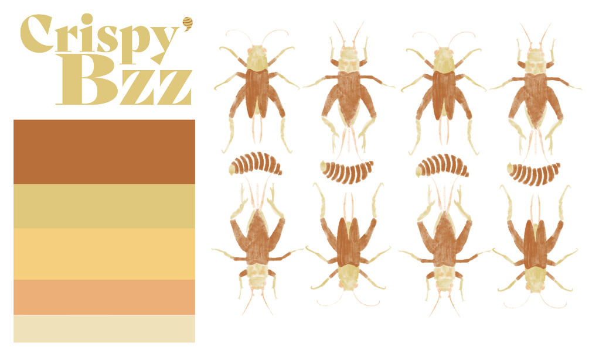
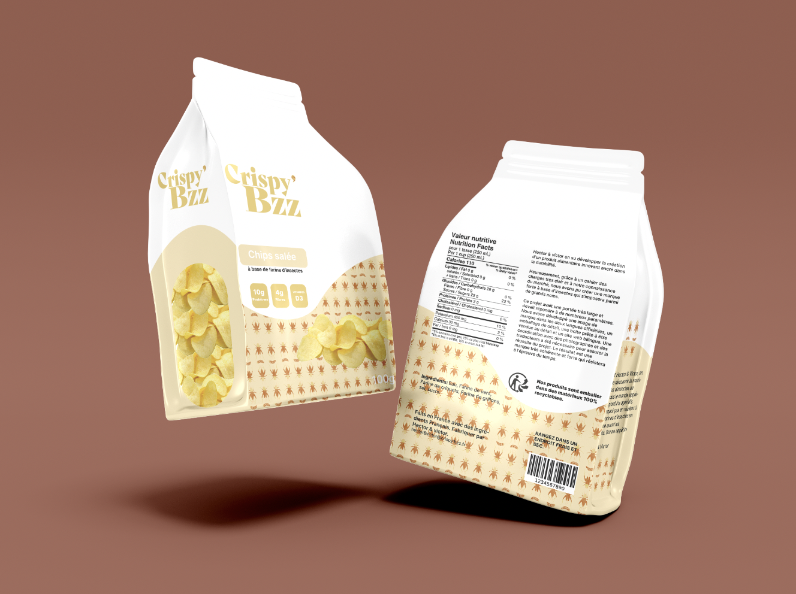
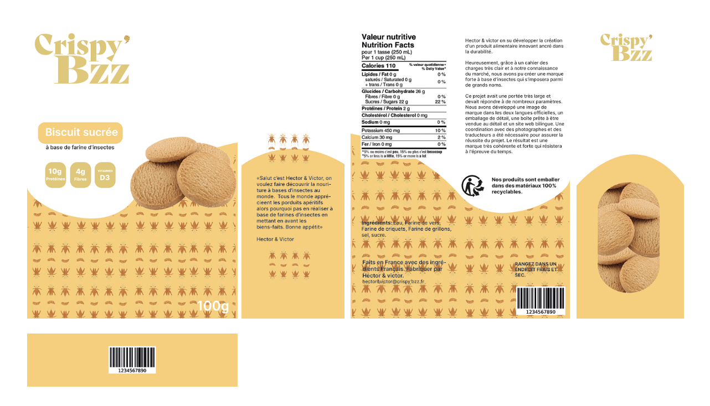

Développement d’une identité de marque pour des produits apéritifs à base d’insectes pour banaliser la consommation des insectes dans le quotidien des Occidentaux en mettant en avant leur qualité très protéinée et en les introduisant en grande surface.
J'ai réalisé trois types de produits apéritif:
Des chips:
Des biscuits:
